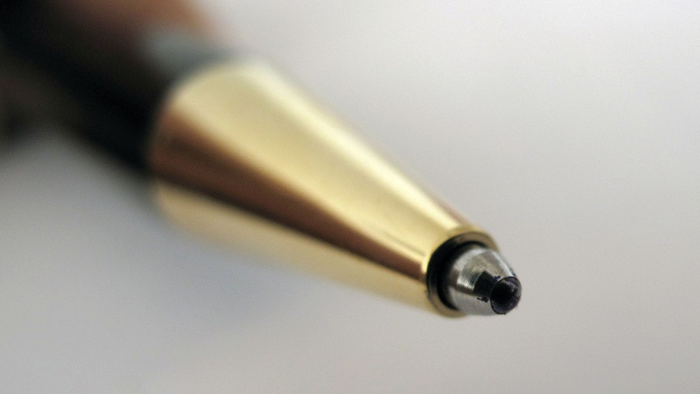

Índice |
Definição:Canetas esferográficas são canetas cuja tinta envolve uma esfera rolante que desliza sobre a superfície destinada à escrita, disponível em várias cores. Na evolução da caneta, o uso de uma esfera na ponta possibilitou a distribuição constante e uniforme de tinta, e popularizou o uso deste instrumento de escrita ao mesmo tempo em que substituía com vantagem a caneta-tinteiro. Com a invenção da caneta as pessoas passaram a escrever cartas, postais e livros. Hoje em dia a caneta esferográfica é usada universalmente para escrever apontamentos e fazer testes. História:A patente da caneta esferográfica foi registada por John J. Loud em 30 de Outubro de 1888. Inicialmente tratava-se de um produto destinado a marcar couros e só posteriormente é que começou a ser comercializado. O jornalista húngaro László Bíró inventou a primeira caneta esferográfica na década de 1930. Ao aperceber-se que o tipo de tinta utilizado na impressão de jornais secava rapidamente, deixando o papel seco e livre de borrões, decidiu criar uma caneta com o mesmo tipo de tinta. Uma vez que a tinta era espessa e não fluía de maneira regular, a esfera contida na caneta girava no interior do bico, recolhendo a tinta do cartucho e depositando-a sobre o papel. Com a eclosão da Segunda Guerra Mundial, para fugir às perseguições nazis no seu país, László e o seu irmão Georg tiveram que deixar a Hungria e receberam a patente da caneta esferográfica em Paris. Em 1944 László Biró vendeu a patente do seu invento ao norte-americano Eversharp-Faber pela quantia de dois milhões de dólares, e, na Europa, ao francês Marcel Bich. Nos Estados Unidos, a primeira caneta esferográfica a ser produzida comercialmente, que substituiria a caneta-tinteiro com sucesso, foi apresentada por Milton Reynolds, em 1945. Também se baseava em uma pequena esfera que liberava uma tinta pesada e gelatinosa sobre o papel. As canetas Reynolds foram divulgadas na época como "a primeira caneta que escreve debaixo de água", tendo sido vendidas dez mil unidades no seu lançamento. A marca era impressionante, uma vez que cada unidade custava cerca de 10 dólares, custo devido principalmente à nova tecnologia. Na Europa, as primeiras canetas esferográficas acessíveis foram produzidas em 1945, por Marcel Bich, cujo mérito foi o do desenvolvimento de um processo industrial de fabricação que reduzia significativamente o custo das canetas por unidade. Em 1949, essas canetas foram lançadas comercialmente sob o nome "Bic", uma abreviação do seu sobrenome, e que era fácil de lembrar pelo público. Dez anos mais tarde, as primeiras canetas "Bic" eram lançadas no mercado norte-americano.

Tipos:A regulação ISO 12757 classifica cada caneta segundo algumas características : |